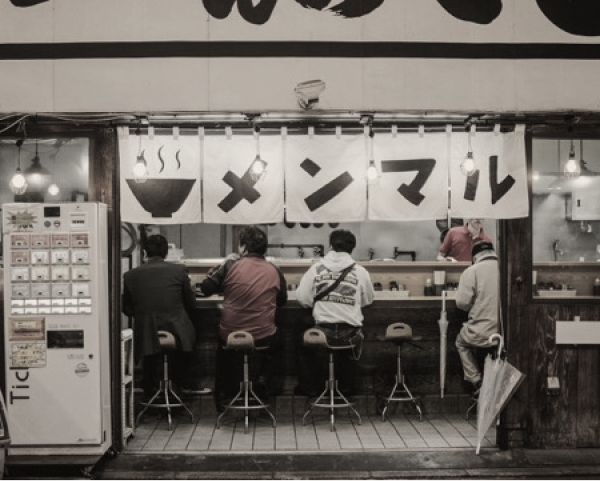

ERamen was found on 1910 at Shin-Yokohama Station, Japan. It
was originally a family business an investor offered to
invest in ERamen for business expansion.
In just
10 years, ERamen has successfully expanded its business to
10 countries all over Asia and has opened more than 500
outlets.
With its vision,
“To be the premier destination for authentic and exceptional
ramen dining experiences, where every bowl tells a story and
leaves a lasting impression on our guests.”
ERamen managed to maintain the authenticity of Japanese ramen
from the old days to be enjoyed through generations until today.